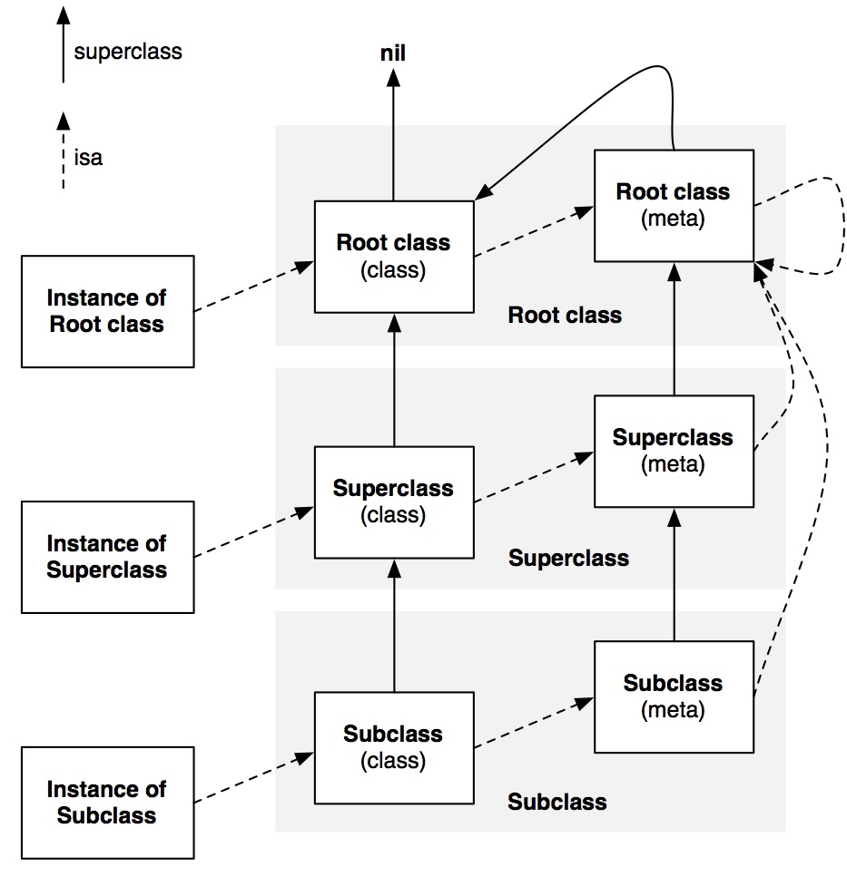
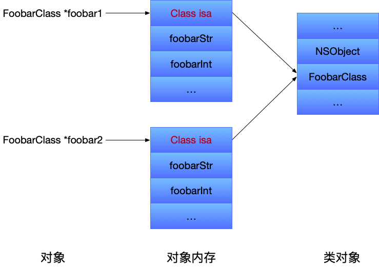
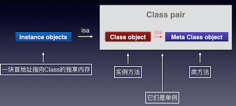

看了一段时间objc的源码，准备开个大坑，写一下了解到的东西，这一时半会是完工不了了，一篇一篇慢慢写吧。
先看一下官方对objc的介绍。
Objective-C is the primary programming language you use when writing software for OS X and iOS. It’s a superset of the C programming language and provides object-oriented capabilities and a dynamic runtime. Objective-C inherits the syntax, primitive types, and flow control statements of C and adds syntax for defining classes and methods. It also adds language-level support for object graph management and object literals while providing dynamic typing and binding, deferring many responsibilities until runtime.
（Objective-C是您在为OS X和iOS编写软件时使用的主要编程语言。 它是C编程语言的超集，提供面向对象的功能和动态运行时。 Objective-C继承了C的语法，原始类型和流控制语句，并添加了用于定义类和方法的语法。 它还为对象图管理和对象文字添加语言级支持，同时提供动态类型和绑定，将许多职责推迟到运行时。）
显然运行时是objc的这个语言非常重要的特性，它可以把很多静态语言（显然objc是动态语言）在编译和链接时期做的事情推迟到运行时期在做。这样写代码就有很大的灵活性，比如把消息转发给我们想要的对象，或者随意交换一个方法的实现等。
所以说objc除了编译器之外，还需要一个运行时系统 (runtime system) 来执行编译后的代码。Objective-C Runtime 就是这个运行时系统了，这个库使得C有了面向对象的能力。
下面我们就分析一下runtime是如何做到的。
由于日常接触的最多的是类与对象，所以我准备就从这里开始写起。
Class
OC的对象都是需要继承NSObject的，那么我们先看看NSObject。
@interface NSObject <NSObject> {
Class isa OBJC_ISA_AVAILABILITY;
// 这个 isa 其实没啥用，已经被废弃了， isa 存在 objc_object 中，并且是 isa_t 结构体类型的
// 即使写 anObject->isa
// Xcode 也报错：Direct accesss to Objective-C's isa deprecated in favor of object_getClass()
// 建议我们用 object_getClass(), 它会返回 isa_t 中存的 Class cls
// 如果这段注释看不懂可以跳过，最后回顾时自然会明白。
}
...
@end
发现除了常用了一些objc的方法外，有个Class类的isa指针。Class类在平时使用的时候会多多少少遇到过，比如说判断某对象是不是某类的实例。
[foobar isMemberOfClass:[SomeClass class]]
通过看源码我们可以看到其实现。
- (BOOL)isMemberOfClass:(Class)cls {
return [self class] == cls;
}
// isMemberOfClass 中 [self class]调用的是- (Class)class方法
- (Class)class {
return object_getClass(self);
}
// isMemberOfClass 中 [SomeClass class]调用的是+ (Class)class方法
+ (Class)class {
return self;
}
由以上代码可以看出，其实判断OC对象的类型，就是判断类型为Class的对象是否相等，那么Class到底是什么呢。
typedef struct objc_class *Class;
可以看到Class其实就是指向objc_class结构体的指针（又被称为类对象）。
objc_class结构体里主要的成员如下。
struct objc_class : objc_object {
// Class ISA;
Class superclass;
cache_t cache; // formerly cache pointer and vtable
class_data_bits_t bits; // class_rw_t * plus custom rr/alloc flags
// 省略以下成员
}
现在我们可以说isMemberOfClass方法其实就是判断两个结构体（objc_class）实例的指针地址是否相同。
objc_class 又继承于objc_object，那么我们再看看objc_object的主要结构。
struct objc_object {
private:
isa_t isa;
public:
// ISA() assumes this is NOT a tagged pointer object
Class ISA();
// getIsa() allows this to be a tagged pointer object
Class getIsa();
// 再次省略一下成员
}
看objc_object的名字也可以猜到这个应该和NSObject有关系，那么他们是怎么产生联系的呢？
在 clang -rewrite-objc （把oc代码转写成c/c++代码）后有这么一段：
#ifndef _REWRITER_typedef_NSObject
#define _REWRITER_typedef_NSObject
typedef struct objc_object NSObject;
typedef struct {} _objc_exc_NSObject;
#endif
这下清楚了。。其实NSObject就是objc_object，一个OC对象其实就是objc_object或继承于objc_object的结构体的指针。。
objc_object结构体中也有一个isa_t类型的isa的成员，这个isa其实才是大家平时经常说的isa，之前在NSObject中的那个，其实是无效的，就是让大家看一下，如同runtime.h中的objc_class结构体定义一样，其实都已经失效了，真正的实现都被隐藏掉了，不过思路是正确的，依旧可以参考。
好，继续看isa_t是哪路神仙。
union isa_t
{
isa_t() { }
isa_t(uintptr_t value) : bits(value) { }
// 以下两个数据成员，同一时间只能储存一个
// 也就是说如果或者是cls或者是bits
// 这样可以达到节省内存的目的
Class cls;
uintptr_t bits;
/// 再再次省略下面的代码，下面代码要展开谈的话，篇幅太大，等下次单开一篇详谈。
}
原来isa_t是个union，对union不了解的同学可以看这篇文章，大概意思可以看上面那段代码的注释。
其中cls就不用多解释了吧，bits不仅仅保存了指针，并对此做了优化，其中还包含了引用计数，析构状态，被其他 weak 变量引用情况，将来一一细表。
到此从整体上浏览了一下Class的结构，其中发现了一个很有意思的现象：
objc_object里有isa_t结构体类型的isa，这个isa包含当前objc_object的类的信息，其中有objc_class的指针，然后
objc_class又继承于objc_object，所以里面又有isa。。绕来绕去有点让人懵逼。别怕，让我们细细的捋一捋，结合后面那张图品味，味道更佳。
前面说过了，OC中的类其实就是一个指向objc_class结构体的指针（Class Object类对象），为了把OC中的类和对象区分开来，引入了一个叫做元类的概念（Meta Class），类对象的isa成员（也就是类对象的类）就是元类。它用来表述类对象本身所具备的元数据。类方法就定义于此处，因为这些方法可以理解成类对象的实例方法。每个类仅有一个类对象，而每个类对象仅有一个与之相关的元类。当你发出一个类似 [NSObject alloc] 的消息时，你事实上是把这个消息发给了一个类对象，这个类对象必须是一个元类的实例，而这个元类同时也是一个根元类 (root meta class) 的实例。所有的元类最终都指向根元类为其超类。所有的元类的方法列表都有能够响应消息的类方法。所以当 [NSObject alloc] 这条消息发给类对象的时候，objc_msgSend() 会去它的元类里面去查找能够响应消息的方法，如果找到了，然后对这个类对象执行方法调用。

关于Class的简单介绍就到此为止了，其实简单来说还是我上面说了好几次的，OC的实例对象就是一个指向objc_object的指针，objc_object中有一个isa_t的成员isa，isa包含当前对象指向的类的信息，OC中的类是一个objc_class的结构体，该结构体继承于objc_object，所以OC中的类也是一个对象，类对象中的isa_t结构体包含了类对象指向的元类(meta-class，元类也是objc_class类型)的信息。
如同绕口令一般。
OC对象
我们先定义一个类。
@interface FoobarClass : NSObject {
NSString *foobarStr;
int foobarInt;
}
还是通过 clang -rewrite-objc （把oc代码转写成c/c++代码）转之后，代码如下。
#ifndef _REWRITER_typedef_NSObject
#define _REWRITER_typedef_NSObject
typedef struct objc_object NSObject;
typedef struct {} _objc_exc_NSObject;
#endif
struct NSObject_IMPL {
Class isa;
};
#ifndef _REWRITER_typedef_FoobarClass
#define _REWRITER_typedef_FoobarClass
typedef struct objc_object FoobarClass;
typedef struct {} _objc_exc_FoobarClass;
#endif
struct FoobarClass_IMPL {
struct NSObject_IMPL NSObject_IVARS; // 通过这样的方式达到继承的目的
NSString *foobarStr;
int foobarInt;
};
通过以上代码可以看出FoobarClass类实例化的对象在内存中的是什么样子。
Class isa;
NSString *foobarStr;
int foobarInt;
之前说过OC的对象是指向结构体实例的指针，所以有两个结论：
- 成员isa的地址就是对象的首地址的值。
- 其他成员变量的地址就是对象的首地址地址加上相应的偏移量。
请看下面例子。
@implementation FoobarClass
- (instancetype)init
{
self = [super init];
if (self) {
foobarStr = @"hehe";
NSLog(@"foobarStr address : %p", &foobarStr);
foobarInt = 10;
NSLog(@"foobarInt address : %p", &foobarInt);
}
return self;
}
@end
// 实例化一个对象
FoobarClass *foobar = [FoobarClass new];
NSLog(@"foobar address : %p", foobar);
// 打印结果
foobarStr address : 0x10064cc68
foobarInt address : 0x10064cc70
foobar address : 0x10064cc60

在之前已经介绍过类对象和元类，以及他们的关系，在这里需要强调一下的是，一个OC对象的对象（-）方法，是在类对象里保存的；而类（+）方法，是在元类里保存的。

通过这个巧妙的设计，可以很方面的区分对象方法和类方法，使得OC中的对象和类达到了结构上的统一。方法的调用的逻辑看着也非常简约：
- 对象方法调用时，通过OC对象的isa在类中查找方法的实现。
- 类方法调用时，通过类对象的isa（OC对象的isa的isa）在元类中获取方法的实现。（OC对象的类方法，就是元类中的对象方法）
总结
为了有个整体的理解，开篇全讲类和对象了，很多东西都是浅尝辄止，后面会进行深入的探讨，一一补全。